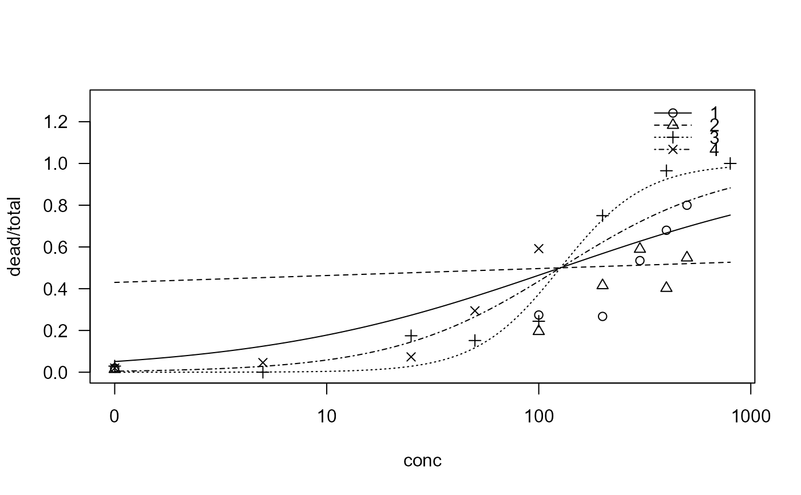

Data from toxicology experiments with selenium
selenium.RdComparison of toxicity of four types of selenium by means of dose-response analysis
Usage
data(selenium)Format
A data frame with 25 observations on the following 4 variables.
typea numeric vector indicating the form of selenium applied
conca numeric vector of (total) selenium concentrations
totala numeric vector containing the total number of flies
deada numeric vector containing the number of dead flies
Source
Jeske, D. R., Xu, H. K., Blessinger, T., Jensen, P. and Trumble, J. (2009) Testing for the Equality of EC50 Values in the Presence of Unequal Slopes With Application to Toxicity of Selenium Types, Journal of Agricultural, Biological, and Environmental Statistics, 14, 469–483
Examples
library(drc)
## Analysis similar to what is proposed in Jeske et al (2009)
## but simply using existing functionality in "drc"
## Fitting the two-parameter log-logistic model with unequal ED50 and slope
sel.m1 <- drm(dead/total~conc, type, weights=total, data=selenium, fct=LL.2(),
type="binomial")
#sel.m1b <- drm(dead/total~conc, type, weights=total, data=selenium, fct=LN.2(),
# type="binomial", start=c(1,1,1,1,50,50,50,50))
plot(sel.m1, ylim = c(0, 1.3))
summary(sel.m1)
#>
#> Model fitted: Log-logistic (ED50 as parameter) with lower limit at 0 and upper limit at 1 (2 parms)
#>
#> Parameter estimates:
#>
#> Estimate Std. Error t-value p-value
#> b:1 -1.50353 0.15547 -9.6706 < 2.2e-16 ***
#> b:2 -0.84323 0.13911 -6.0617 1.347e-09 ***
#> b:3 -2.16354 0.13824 -15.6504 < 2.2e-16 ***
#> b:4 -1.45303 0.16861 -8.6179 < 2.2e-16 ***
#> e:1 252.25555 13.82683 18.2439 < 2.2e-16 ***
#> e:2 378.46048 39.37070 9.6127 < 2.2e-16 ***
#> e:3 119.71320 5.90536 20.2719 < 2.2e-16 ***
#> e:4 88.80529 8.61614 10.3069 < 2.2e-16 ***
#> ---
#> Signif. codes: 0 '***' 0.001 '**' 0.01 '*' 0.05 '.' 0.1 ' ' 1
## Testing for equality of slopes
sel.m2 <- drm(dead/total~conc, type, weights=total, data=selenium, fct=LL.2(),
type="binomial", pmodels=list(~1, ~factor(type)-1))
sel.m2b <- drm(dead/total~conc, type, weights=total, data=selenium, fct=LN.2(),
type="binomial", pmodels=list(~1, ~factor(type)-1))
plot(sel.m2, ylim = c(0, 1.3))
summary(sel.m2)
#>
#> Model fitted: Log-logistic (ED50 as parameter) with lower limit at 0 and upper limit at 1 (2 parms)
#>
#> Parameter estimates:
#>
#> Estimate Std. Error t-value p-value
#> b:(Intercept) -1.590121 0.069452 -22.895 < 2.2e-16 ***
#> e:factor(type)1 253.442530 13.109512 19.333 < 2.2e-16 ***
#> e:factor(type)2 331.625839 16.855683 19.674 < 2.2e-16 ***
#> e:factor(type)3 114.793108 6.760525 16.980 < 2.2e-16 ***
#> e:factor(type)4 84.970604 6.173312 13.764 < 2.2e-16 ***
#> ---
#> Signif. codes: 0 '***' 0.001 '**' 0.01 '*' 0.05 '.' 0.1 ' ' 1
anova(sel.m2, sel.m1) # 48.654
#>
#> 1st model
#> fct: LL.2()
#> pmodels: ~1, ~factor(type) - 1
#> 2nd model
#> fct: LL.2()
#> pmodels: type (for all parameters)
#>
#> ANOVA-like table
#>
#> ModelDf Loglik Df LR value p value
#> 1st model 5 -400.54
#> 2nd model 8 -376.21 3 48.654 0
#anova(sel.m2b, sel.m1b)
# close to the value 48.46 reported in the paper
## Testing for equality of ED50
sel.m3<-drm(dead/total~conc, type, weights=total, data=selenium, fct=LL.2(),
type="binomial", pmodels=list(~factor(type)-1, ~1))
#sel.m3b<-drm(dead/total~conc, type, weights=total, data=selenium, fct=LN.2(),
# type="binomial", pmodels=list(~factor(type)-1, ~1), start=c(1,1,1,1,50))
plot(sel.m3, ylim = c(0, 1.3))

summary(sel.m3)
#>
#> Model fitted: Log-logistic (ED50 as parameter) with lower limit at 0 and upper limit at 1 (2 parms)
#>
#> Parameter estimates:
#>
#> Estimate Std. Error t-value p-value
#> b:factor(type)1 -0.603492 0.100467 -6.0069 1.892e-09 ***
#> b:factor(type)2 -0.058099 0.082599 -0.7034 0.4818
#> b:factor(type)3 -2.177597 0.137733 -15.8102 < 2.2e-16 ***
#> b:factor(type)4 -1.095290 0.102328 -10.7037 < 2.2e-16 ***
#> e:(Intercept) 126.512287 6.854739 18.4562 < 2.2e-16 ***
#> ---
#> Signif. codes: 0 '***' 0.001 '**' 0.01 '*' 0.05 '.' 0.1 ' ' 1
anova(sel.m3, sel.m1) # 123.56
#>
#> 1st model
#> fct: LL.2()
#> pmodels: ~factor(type) - 1, ~1
#> 2nd model
#> fct: LL.2()
#> pmodels: type (for all parameters)
#>
#> ANOVA-like table
#>
#> ModelDf Loglik Df LR value p value
#> 1st model 5 -437.99
#> 2nd model 8 -376.21 3 123.56 0
#anova(sel.m3b, sel.m1b)
# not too far from the value 138.45 reported in the paper
# (note that the estimation procedure is not exactly the same)
# (and we use the log-logistic model instead of the log-normal model)